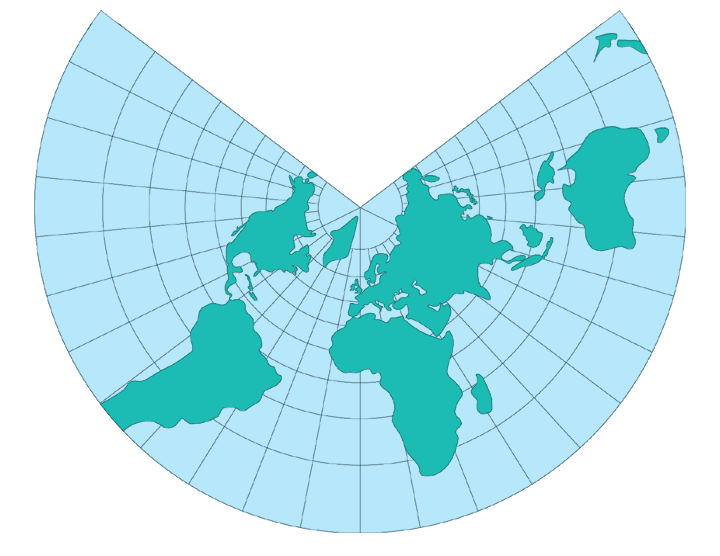

Lambert Conformal Conic
Usage

Usage:*
The officially adopted
projection for the State Plane Coordinate Systems
(
SPCS) of states of predominantly east-west expanse, the Lambert
Conformal Conic preserves scale along one or two chosen parallels.
Additionally, the Lambert Conformal Conic is used for the 1:1,000,000-
scale regional world aeronautical charts, the 1:500,000-scale sectional
aeronautical charts, and the 1:500,000-scale State base maps(all 48
mainland States have the same standard parallels of lat. 33 degrees and
44 degrees N., and thus match).
* Usage information source:
Snyder, John P. Map Projections - A Working Manual Paper U.S. Geological
Survey Professional Paper 1395. Washington: United States Government
Printing Office, 1987.